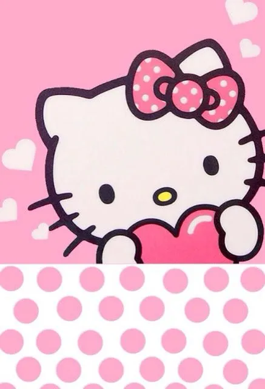
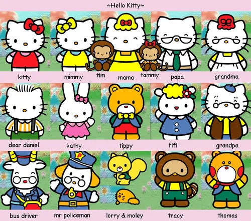

|  | Kitty et sa soeur Jumelle Mimmy sont deux jeunes chattes qui vivent à Londres. Ensemble, elles apprennent la vie tout en s'amusant. |
|  | Hello Kitty est entourée d’un groupe de personnages animaux amicaux, créés par Sanrio. Voici quelques-uns des personnages les plus populaires : Mimmy la sœur jumelle de Hello Kitty, vivant à Londres avec leur famille. Pochacco,un chien amical et curieux, qui est actuellement le troisième personnage Sanrio le plus populaire. My Melody, une lapine rose avec un nœud blanc, connue pour ses talents de cuisinière et sa gentillesse.Keroppi, un grenouille vert avec un béret rouge, qui aime jouer avec Hello Kitty et ses amis. Gudetama, un œuf qui n’a pas envie de faire grand-chose, mais qui est cependant très populaire auprès des fans de Hello Kitty. Cinnamoroll, un chiot blanc avec des oreilles et une queue en forme de pommeau, qui adore jouer avec des ballons et des jouets. |